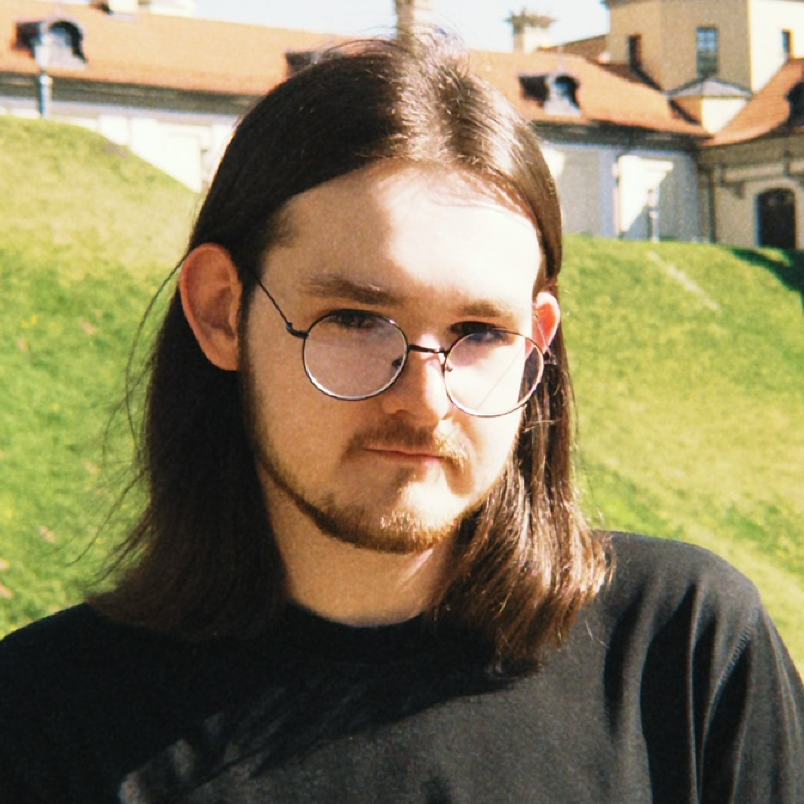
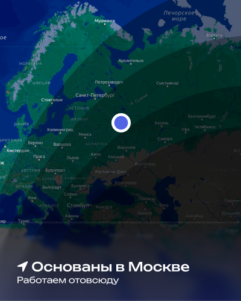
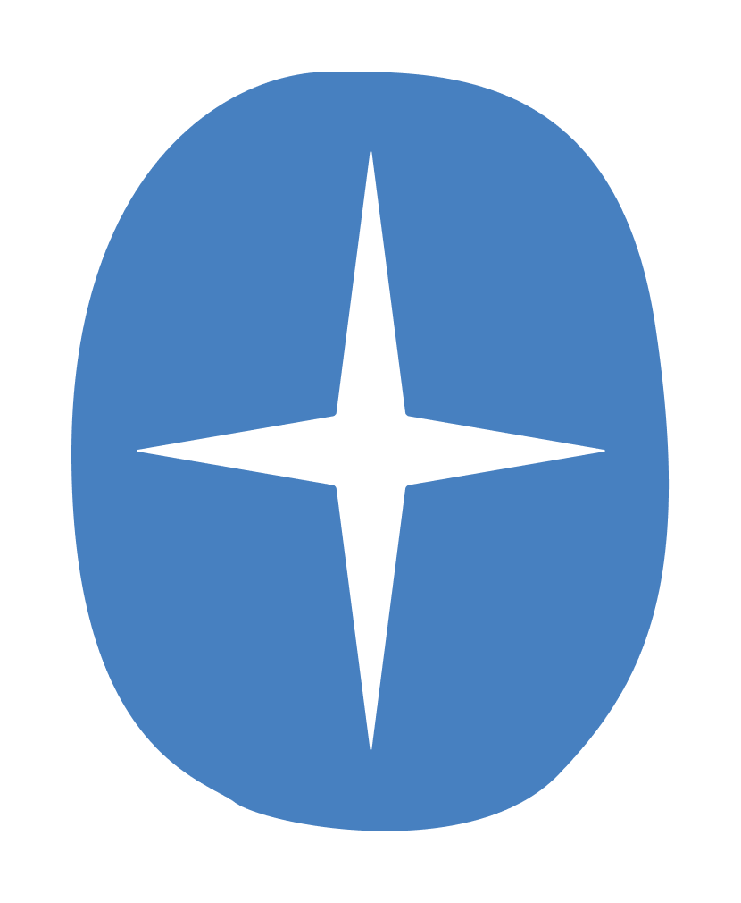
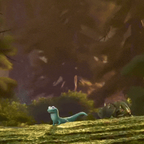
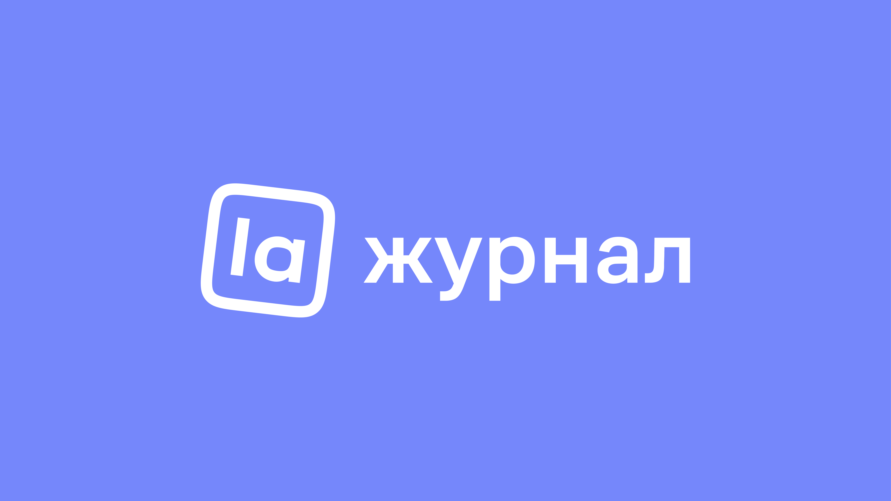

01
# КТО Я

Специализируюсь в продуктовом и коммуникативном дизайне, разработке дизайн-систем и маркетинговых стратегий. Создаю удобные, по-человечески понятные продукты — с фокусом на исследованиях и уникальности каждого кейса.

Немного про WNS Design
5 лет работаю с B2B-платформами и B2C-продуктами — от КАМАЗ и Lamoda до мини-игр и бьюти-ботов. В 2025 стартовал проект WNS, где компанией профессионалов мы делаем цифровое, понятное и близкое всем людям.
5 ЛЕТв проектах
50+кейсов
-5зрение
{
"quote":"Эмпатия всегда в первую очередь – к любому пользователю, к заказчику."
}
02
# ДЕЛАЮ

открыт для интересных предложений
Бренд-платформа & айдентика01
Коммуникационная стратегия
& ToV02
& ToV02
SMM & Influence-маркетинг03
Продукт / UX & дизайн-
системы04
системы04
Лендинги, MVP, Telegram MiniApps05
CJM, A/B-тестирование
& аналитика06
& аналитика06
Event-маркетинг & PR-
кампании07
кампании07
03
# ПРОЦЕСС
Бриф & бизнес-цели — KPI, аудитория, рынок
Ресёрч — аудит, фокус-группы, CJM, конкуренты
Стратегия & концепт — позиционирование, ToV, контент
Дизайн & система — бренд, UX, креативы, прототипы
Запуск & A/B — измеряем, итерируем, масштабируем
Кейс готов
( ˘ᵕ˘ )
( ˘ᵕ˘ )

направляю в прод
{
"rule":"Цифры не убивают крафт — они его подтверждают. Люблю и креатив, и циферки."
}04
# РАБОТЫ

Lamoda B2B Media Platform
[ КАМАЗ · креативы кампании ]
КАМАЗ — бренд & lead-gen
[ VetCity · OOH + SMM-концепт ]
VetCity Clinic
[ GiftSpin · MiniApp UI ]
GiftSpin · Telegram MiniApp
[ Liberty · бренд & VK ]
Liberty / НИЯУ МИФИ
[ Траектория · мерч ]